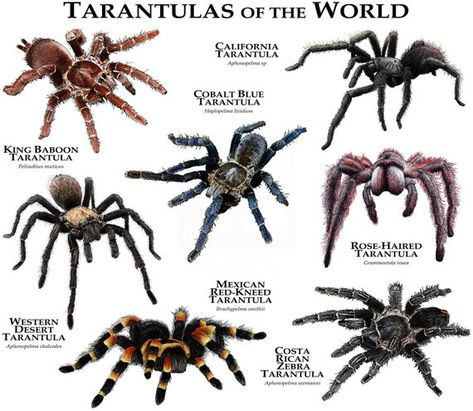

Tarantulas
La tarántula es una araña peluda de la familia de los arácnidos, que también incluye a los ácaros, las garrapatas y los escorpiones. Las tarántulas viven en todo el mundo y pueden medir hasta unas 5 pulgadas de largo (unos 12 cm.).
La tarántula es una araña peluda de la familia de los arácnidos, que también incluye a los ácaros, las garrapatas y los escorpiones. Las tarántulas viven en todo el mundo y pueden medir hasta unas 5 pulgadas de largo (unos 12 cm.).
Comúnmente, las arañas de tierra viven debajo de piedras, hojas, troncos y otros objetos que están en el suelo. Este grupo de arañas normalmente es de un color rojo o pardo grisáceo, y pueden ser lisas o rayadas. No producen veneno que pueda dañar a los seres humanos.

La araña lobo es una de las especies de araña más grandes de Europa y un habitante fascinante para tu terrario. Como cualquier animal, esta araña nocturna tiene sus hábitos y necesidades propios. Para que puedas ofrecerle un hogar adecuado, te dejamos aquí unos consejos de tenencia y cuidados acordes a la especie.
Se trata de una de las pocas especies de araña que vive permanentemente bajo el agua, en estanques y charcos. Se alimenta de animales acuáticos, incluyendo crías de peces. Aunque caza, come y se reproduce dentro del agua y puede nadar y bucear, esta araña respira con pulmones, como todas las demás.
Son tiburones pequeños y de aguas profundas, conocidos por sus órganos bioluminiscentes que les permiten producir luz.
| Especie | Longitud Promedio | Hábitat | Dieta |
|---|---|---|---|
| Tarantula | 10-15 cm | Terrestre (tierra, selvas) | Insectos y pequeños vertebrados |
| Araña de tela de embudo | 2-4 cm | Prados, jardines | Insectos, especialmente saltamontes |
| Araña de jardín | 5-10 cm | Jardines, bosques | Insectos voladores, polillas |
| Araña de saco | 1-3 cm | Escondites, rincones | Insectos, especialmente arañas |
| Araña saltadora | 1-2 cm | Diversos (jardines, casas) | Insectos pequeños |
| Araña lobo | 2-4 cm | Bosques, praderas | Insectos, cazan activamente |
| Araña de agua | 1-3 cm | Cerca de cuerpos de agua | Insectos acuáticos |
| Viuda negra | 3-5 cm | Escondites oscuros | Insectos, especialmente pequeños |